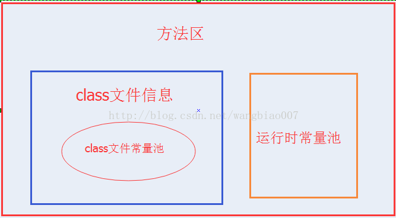
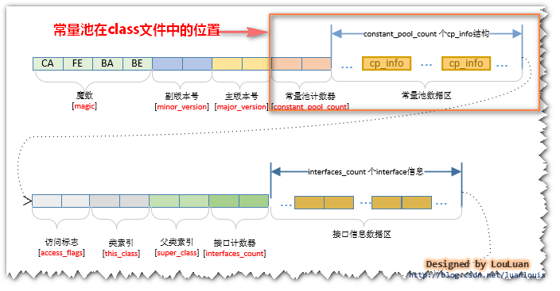
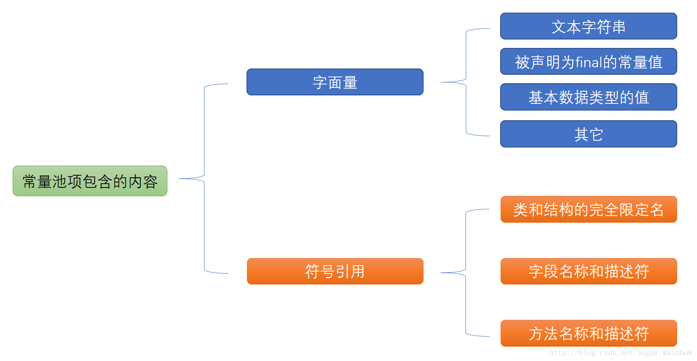

常量池
在java的内存分配中，经常听到很多关于常量池的描述，我开始看的时候也是看的很模糊，网上五花八门的说法简直太多了，最后查阅各种资料，终于算是差不多理清了，很多网上说法都有问题，笔者尝试着来区分一下这几个概念。
全局字符串池（string pool也有叫做string literal pool）
全局字符串池里的内容是在类加载完成，经过验证，准备阶段之后在堆中生成字符串对象实例，然后将该字符串对象实例的引用值存到string pool中（记住：string pool中存的是引用值而不是具体的实例对象，具体的实例对象是在堆中开辟的一块空间存放的。）。 在HotSpot VM里实现的string pool功能的是一个StringTable类，它是一个哈希表，里面存的是驻留字符串(也就是我们常说的用双引号括起来的)的引用（而不是驻留字符串实例本身），也就是说在堆中的某些字符串实例被这个StringTable引用之后就等同被赋予了”驻留字符串”的身份。这个StringTable在每个HotSpot VM的实例只有一份，被所有的类共享。
class文件常量池（class constant pool）
我们都知道，class文件中除了包含类的版本、字段、方法、接口等描述信息外，还有一项信息就是常量池(constant pool table)，用于存放编译器生成的各种字面量(Literal)和符号引用(Symbolic References)。 字面量就是我们所说的常量概念，如文本字符串、被声明为final的常量值等。 符号引用是一组符号来描述所引用的目标，符号可以是任何形式的字面量，只要使用时能无歧义地定位到目标即可（它与直接引用区分一下，直接引用一般是指向方法区的本地指针，相对偏移量或是一个能间接定位到目标的句柄）。一般包括下面三类常量：
- 类和接口的全限定名
- 字段的名称和描述符
- 方法的名称和描述符
常量池的每一项常量都是一个表，一共有如下表所示的11种各不相同的表结构数据，这每个表开始的第一位都是一个字节的标志位（取值1-12），代表当前这个常量属于哪种常量类型。
每种不同类型的常量类型具有不同的结构，具体的结构本文就先不叙述了，本文着重区分这三个常量池的概念（读者若想深入了解每种常量类型的数据结构可以查看《深入理解java虚拟机》第六章的内容）。
运行时常量池（runtime constant pool）
当java文件被编译成class文件之后，也就是会生成我上面所说的class常量池，那么运行时常量池又是什么时候产生的呢？
jvm在执行某个类的时候，必须经过加载、连接、初始化，而连接又包括验证、准备、解析三个阶段。而当类加载到内存中后， jvm就会将class常量池中的内容存放到运行时常量池中，由此可知，运行时常量池也是每个类都有一个。在上面我也说了，class常量池中存的是字面量和符号引用， 也就是说他们存的并不是对象的实例，而是对象的符号引用值。而经过解析（resolve）之后，也就是把符号引用替换为直接引用，解析的过程会去查询全局字符串池， 也就是我们上面所说的StringTable，以保证运行时常量池所引用的字符串与全局字符串池中所引用的是一致的。
举个实例来说明一下:
public class HelloWorld {
public static void main(String []args) {
String str1 = "abc";
String str2 = new String("def");
String str3 = "abc";
String str4 = str2.intern();
String str5 = "def";
System.out.println(str1 == str3);//true
System.out.println(str2 == str4);//false
System.out.println(str4 == str5);//true
}
}
回到上面的那个程序，现在就很容易解释整个程序的内存分配过程了，首先，在堆中会有一个”abc”实例，全局StringTable中存放着”abc”的一个引用值，然后在运行第二句的时候会生成两个实例，一个是”def”的实例对象，并且StringTable中存储一个”def”的引用值，还有一个是new出来的一个”def”的实例对象，与上面那个是不同的实例，当在解析str3的时候查找StringTable，里面有”abc”的全局驻留字符串引用，所以str3的引用地址与之前的那个已存在的相同，str4是在运行的时候调用intern()函数，返回StringTable中”def”的引用值，如果没有就将str2的引用值添加进去，在这里，StringTable中已经有了”def”的引用值了，所以返回上面在new str2的时候添加到StringTable中的 “def”引用值，最后str5在解析的时候就也是指向存在于StringTable中的”def”的引用值，那么这样一分析之后，下面三个打印的值就容易理解了。上面程序的首先经过编译之后，在该类的class常量池中存放一些符号引用，然后类加载之后，将class常量池中存放的符号引用转存到运行时常量池中，然后经过验证，准备阶段之后，在堆中生成驻留字符串的实例对象（也就是上例中str1所指向的”abc”实例对象），然后将这个对象的引用存到全局String Pool中，也就是StringTable中，最后在解析阶段，要把运行时常量池中的符号引用替换成直接引用，那么就直接查询StringTable，保证StringTable里的引用值与运行时常量池中的引用值一致，大概整个过程就是这样了。
总结
- 全局常量池在每个VM中只有一份，存放的是字符串常量的引用值。
- class常量池是在编译的时候每个class都有的，在编译阶段，存放的是常量的符号引用。
- 运行时常量池是在类加载完成之后，将每个class常量池中的符号引用值转存到运行时常量池中，也就是说，每个class都有一个运行时常量池，类在解析之后，将符号引用替换成直接引用，与全局常量池中的引用值保持一致。
class文件常量池和运行时常量池
最近一直被方法区里面存着什么东西困扰着？
- 方法区里存class文件信息和class文件常量池是个什么关系。
- class文件常量池和运行时常量池是什么关系。
方法区存着类的信息，常量和静态变量，即类被编译后的数据。这个说法其实是没问题的，只是太笼统了。更加详细一点的说法是方法区里存放着类的版本，字段，方法，接口和常量池。常量池里存储着字面量和符号引用。
符号引用包括：
- 类的全限定名，
- 字段名和属性，
- 方法名和属性。
下面一张图是方法区，class文件信息，class文件常量池和运行时常量池的关系

下面一张图用来表示方法区class文件信息包括哪些内容:

可以看到在方法区里的class文件信息包括：魔数，版本号，常量池，类，父类和接口数组，字段，方法等信息，其实类里面又包括字段和方法的信息。
下面的图表是class文件中存储的数据类型
| 类型 | 名称 | 数量 |
|---|---|---|
| u4 | magic | 1 |
| u2 | minor_version | 1 |
| u2 | major_version | 1 |
| u2 | constant_pool_count | 1 |
| cp_info | constant_pool | constant_pool_count -1 |
| u2 | access_flags | 1 |
下面用一张图来表示常量池里存储的内容：

class文件常量池和运行时常量池的关系以及区别
class文件常量池存储的是当class文件被java虚拟机加载进来后存放在方法区的一些字面量和符号引用，字面量包括字符串，基本类型的常量。
运行时常量池是当class文件被加载完成后，java虚拟机会将class文件常量池里的内容转移到运行时常量池里，在class文件常量池的符号引用有一部分是会被转变为直接引用的，比如说类的静态方法或私有方法，实例构造方法，父类方法，这是因为这些方法不能被重写其他版本，所以能在加载的时候就可以将符号引用转变为直接引用，而其他的一些方法是在这个方法被第一次调用的时候才会将符号引用转变为直接引用的。
总结：
方法区里存储着class文件的信息和运行时常量池,class文件的信息包括类信息和class文件常量池。
运行时常量池里的内容除了是class文件常量池里的内容外，还将class文件常量池里的符号引用转变为直接引用，而且运行时常量池里的内容是能动态添加的。例如调用String的intern方法就能将string的值添加到String常量池中，这里String常量池是包含在运行时常量池里的，但在jdk1.8后，将String常量池放到了堆中